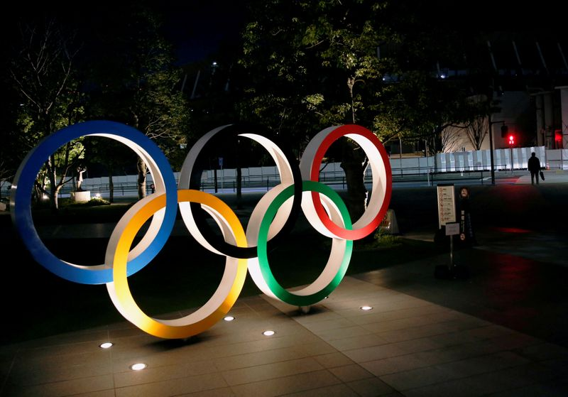

70% of Japanese want Tokyo Games cancelled or delayed: poll
Does anyone out there actually give a damn?
Posted On: 2021-04-13T00:00:00
Posted By: Reilley
Japan Chinese virus death rate since February 2020; 9600.Population of Japan; 125 million.
Confirms fear is a much more powerful weapon than a .357 Magnum.
Posted On: 2021-04-13T00:00:00
Posted By: louisleftypounder
Wow!!And I thought the propaganda arm of our Fascist government had done a great job of instilling the COVID fear better than any country.Guess not.Japan is petrified and paranoid.Masks are no big thing there anyway.Joseph Goebbels would be dancing in the streets to hear how well countries are doing spreading propaganda.
Posted On: 2021-04-13T00:00:00
Posted By: Sparky
Japan has actually been under martial law since the Fukushima disaster of 2011.People are warned not to dare speak about the catastrophe.They are living in fear of their own government.Same as the USA?
Posted On: 2021-04-13T14:20:00
Posted By: Randall Bunton
I thought Japan was in a better place.:-/
Posted On: 2021-04-14T23:00:00
Posted By: pepperoni
Push it to next year, and boycott China’s winter games.Problem solved.
Posted On: 2021-04-13T00:00:00
Posted By: HawaiiRules
Continuing with Olympics this year is about as inane as Biden opening our southern borders!
Posted On: 2021-04-13T11:18:00
Posted By: R Morgan Lund
are Japanese polls more accurate than America's?,,,
Posted On: 2021-04-14T14:00:00
Posted By: crcitizen
What does Hideki have to say?He is the new Master of Japan.No pressure there.
Posted On: 2021-04-14T23:00:00
Posted By: pepperoni
Dont give a damn about the Olympics anymore.Just more nonsense
Posted On: 2021-04-14T19:00:00
Posted By: golfguy65
Pro sports has shown it can done safely with much longer seasons than the 3 week Olympics.Quarantine the athletes for 2 weeks prior, keep them in the Olympic village during the games.
Posted On: 2021-04-14T13:00:00
Posted By: gsbeliever
Hold on wait for OAN to approve of your opinion.1st amendment is being lost every day to the global devils.
Posted On: 2021-04-13T14:24:00
Posted By: Randall Bunton

Content Date: 2021-04-13
Download Date: 2021-04-16
Document ID: L0C049SZ6